Race-Night Fund-Raising Event - Alford - 21 Oct 23
On the evening of Saturday 21 October, despite the risk of being cut off by flooding from storm 'Babet', around 40 inveterate gamblers gathered at Alford Church Hall for the Eastern Branch's fund-raising event in support of the Guild. Once again the event was a Race Night, the 'Betty Collett Cup Meeting'.
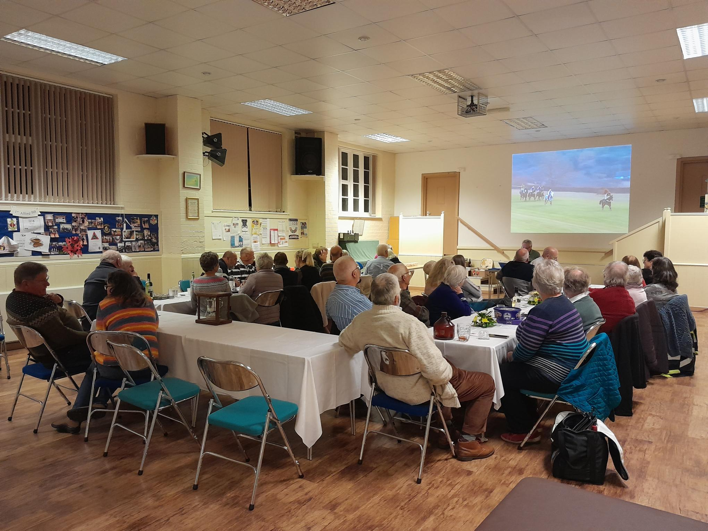
There was a full race card of 9 races, each race having 8 horses. All of the horses in the first 8 races had been pre-sold to owners from throughout the Guild for the very modest sum of £2-50 each!
Thanks go to all our owners, and to our race sponsors.
The winners of the first eight races and their owners were:
1. Gone Like The Wind - Richard Willoughby
2. Toby - Louise Bullen
3. Key Lime Pie - David Reynolds
4. Margaret's Magical Mare - Margaret Hewitson
5. Kirsty's Komet - Kirsty Grantham
6. Spirit - Jane Waite
7. Lucky Number 7 - Frances Briers
8. Canwick Crasher - Graham Colborne
The Betty Collett Cup
The last race of the night was the 'Betty Collett Cup'. This was a race-off between the winning horses from the previous eight races.
The winner of this race was 'Margaret's Magical Mare', owned by Margaret Hewitson who will be the proud holder of the Betty Collett Memorial Cup for the next 12 months.
At the halfway point in the proceedings there was a welcome break for a supper of lasagne followed by a crumble and custard, produced by Caitlin Meyer ably assisted by her team of helpers. Thanks also go to Mary Willoughby for the table settings.
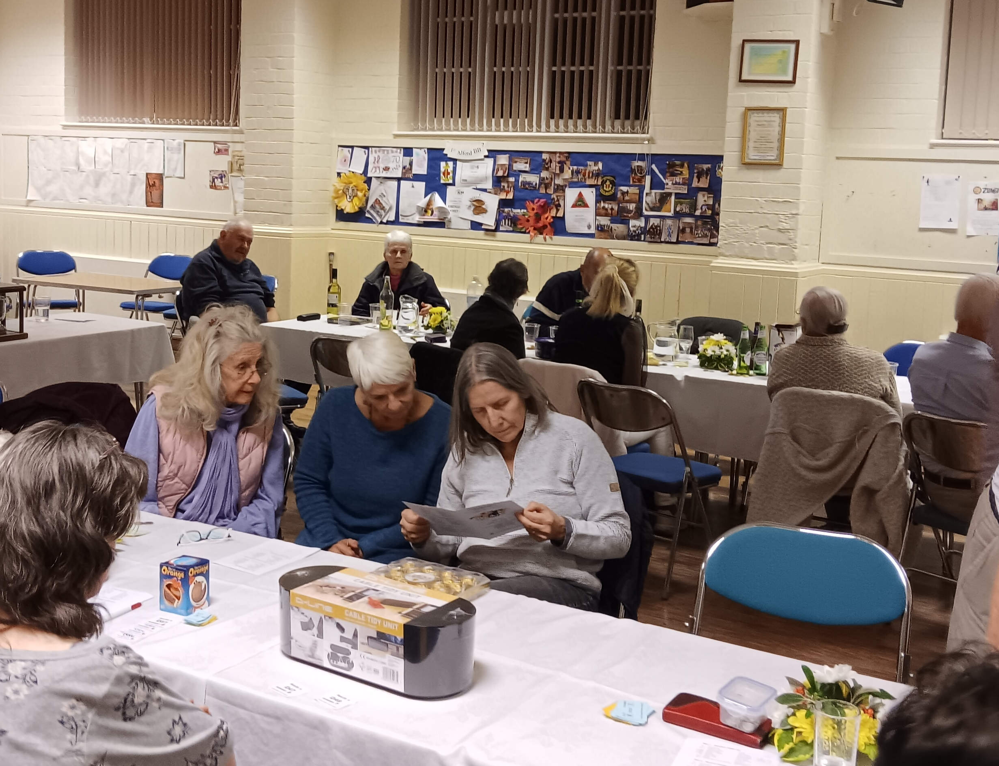
The raffle provided more fun and prizes, raising £110.00, and our thanks go to all who donated prizes.
Overall, including the raffle, we raised over £640.00 for the Guild, which will be shared by the Bell Repair Fund and the Training and Recruitment Fund. Our thanks go to all who participated in any way in the evening.
Phil Ford
Guild Six Bell Striking Competition - Northern Branch 23rd September 2023
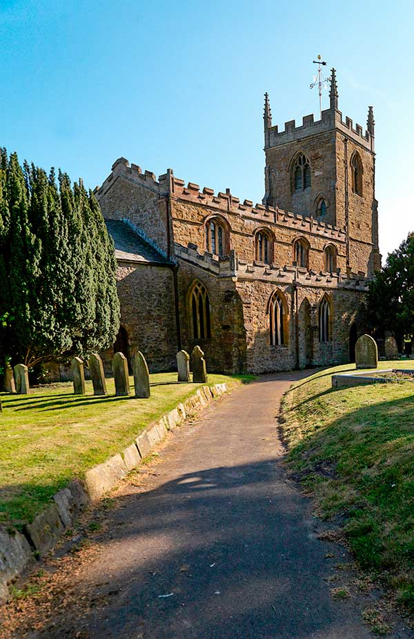
Northern Branch were the hosts for the 2023 Guild Six Bell striking competition taking us to Tealby for the method section for the John Freeman Cup and to Middle Rasen for the call changes section, for the Ted Colley Plate.
For the Call Change Section 5 teams from Scotter, Belton, Barrowby, Stow, and The Rasen Group took part in the Plate competition. Stow - last year's close runners up - were clear winners with 26 faults.
For the Method Section 6 teams from Harlaxton, Messingham, Bourne, Alford, Gainsborough and The Rasen Group took part in the Cup competition. Bourne and Messingham found themselves in a league of their own, with Bourne last year's victors (and again the only team to ring minor) winning with 25 faults. Alford were placed a creditable fourth.
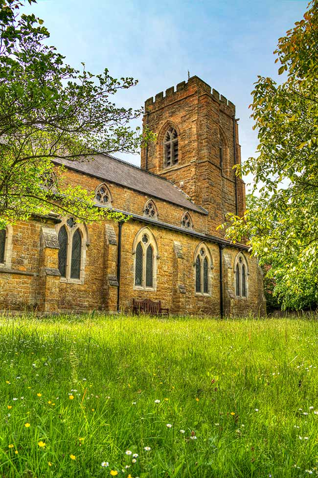
While the judges deliberated Northern Branch expertly turned their skills to catering for the masses: baked potatoes with various fillings, cakes and puddings and copious amounts of liquid refreshments were devoured by the assembled multitude in Middle Rasen Village Hall as the tension mounted.
The day concluded with a hectic round of Ringers Bingo devised by Amy Dixon which was enjoyed by one and all. A big thank you to Northern Branch for organising, running , catering and the bingo!!
Eastern Branch Ringing Ramble - Sat 5 Aug
St Helens West Keal to SSt Peter & Paul Old Bolingbroke and back
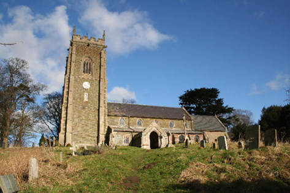
On an extremely wet August day (probably was one of the wettest on record), approximately 25 ringers from all over Lincolnshire, from Holbeach and Spalding up to Louth, with varying abilities met at the beautiful church of St Helens in West Keal. Unfortunately the weather spoilt the amazing view normally associated with St Helens; the Stump was not visible until later in the afternoon, so no hope of a glimpse of the Wash.
Learners and improvers were given the opportunity to ring in a new tower with experienced ringers helping the rounds to move along. A course of Grandsire doubles was rung.
The church helpers had left a pitcher of juice and a cake for us. It is wonderful that the local community appreciate their bells being rung.
The ringers then set off on the 1½ mile walk to Old Bolingbroke, where the tea and cakes provided by the Old Bolingbroke team was gratefully received.
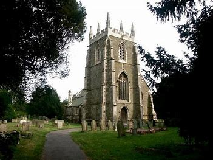
Again ringing of various levels was accomplished, with a course of Ashford Doubles (never been rung before at Old Bolingbroke) achieved. Visitors (sheltering) in the Church were very interested in the ringing and even the weather did not diminish the upbeat, friendly atmosphere.
The return leg to St Helens was made in gentle rain following the ringing and refreshments.
A small band stayed on and rang again at St. Helens before finally parting company at 7:30 pm.
Thank you to everyone who made this a pleasant and enjoyable way to spend a Saturday afternoon.
Tess Rowland
Branch BBQ at Friskney - July 1st
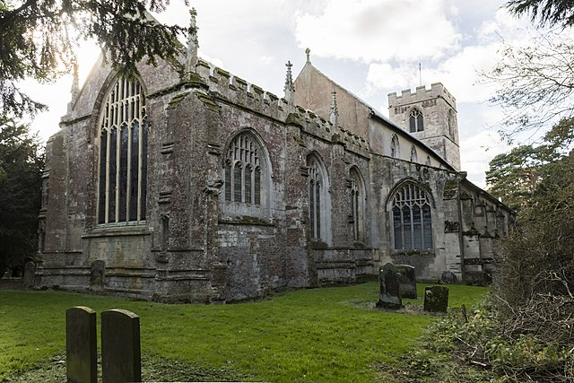
On Saturday 1 July, LDGCBR Eastern Branch held their annual BBQ. It was a good afternoon and evening, with numbers having recovered post Covid.
Just over 50 ringers and their families, enjoyed ringing the bells at various levels in All Saints before heading to the Church Hall for a delicious BBQ, expertly cooked by Clare Willoughby, ably assisted by her son, Daniel.
The afternoon ringing concluded with a touch of Grandsire Doubles rung in memory of Tom Freeston.
The quiz went well, and a raffle was staged.
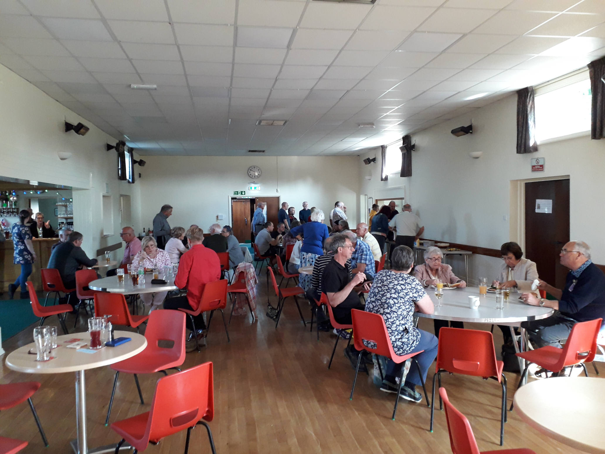
Thanks go to;
- Jo French, ringing master, who organised the ringing,
- all the ringers, who helped throughout the ringing and BBQ,
- Bruce Talmage our excellent quiz master,
- everyone who donated raffle prizes,
- and everyone who attended, to make it such a success.
An overall profit of over £380 was raised for the EB Funds.
Phil Ford
Eastern Branch Six Bell Striking Competition - Wrangle 3rd June 2023
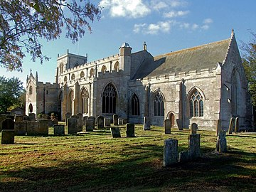
Following on from a general ringing session, there were four teams entering the Eastern Branch Striking Competition at Wrangle church.
In order of performance the teams were: Butterwick, Swineshead, All Stars and Ingoldmells.
The event wasn't without mishap with a clapper parting company with a bell and a stay misbehaving. However, thanks to the Kwik Fit skills of Greg Harrison, we were able to continue undaunted.
Alan and Sylvia Bird kindly adjudicated the striking and gave helpful feedback at the end of play. The outright winners were the Ingoldmells team pictured below with Alan and Sylvia and Guild Master Keith Butters.
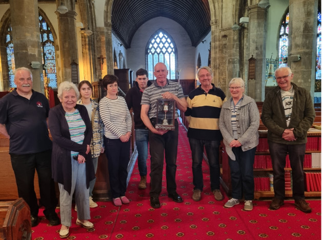
Thanks also go to the incumbent and PCC of Wrangle Church for allowing the use of the bells on this occasion.
Branch Practice at Butterwick - March 24th

On Saturday afternoon, 24th March 2023, the Eastern Branch held a well attended ringing meeting at Butterwick. It was good to welcome eight visitors to the Branch, together with twenty Eastern Branch ringing members.
There was plenty of space to spread out into the church at this light, easy going, ground floor ring of six bells. The ringing ranged from Call Changes to London S. Minor.
After a brief business meeting, ringing continued until 16.10.
Eastern Branch AGM - 4th February 2023
The Eastern Branch AGM was held at Ingoldmells on 4th February.
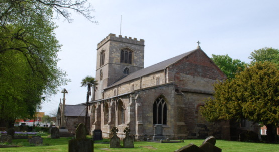
The meeting was preceded by a very enjoyable session of ringing at St Peter's and the usual Service. We then decamped to St Peter's Church Hall where the local team had provided a very tasty hot meal. The bread and butter pudding was a very popular choice of sweet, with all available portions soon taken!
The meeting began 1:30 p.m. with 20 attendees. Before we got down to business, a minute's silence was observed in remembrance of the late Joan Simpson of Coningsby.
Deputy ringing master, Jo French outlined the variety of ringing events held during 2022, with more activity following the pandemic. Jo was enthusiastic about the adoption of the ART training scheme, and announced that she was looking to run additional ART courses, particularly the course which trains new conductors.
Secretary Colin Simpson reported that branch membership stood at 67 at the end of 2022 as opposed to 72 at the end of 2021, but it was noted that there are a considerable number of new learners who will become members in the not too distant future.
All of the officers of the 2022 branch committee were re-elected en bloc. The only exception was that Jo French's and Caitlin Meyer's roles as ringing master and deputy ringing master are to be reversed, and that Edward Vear would stand down as Safeguarding Officer. The post of Safeguarding Officer will be advertised to Branch members and nominations invited.
The meeting finished at 2:40 pm and was followed by more ringing at Ingoldmells church.
Read the full minutes of the meeting here ...